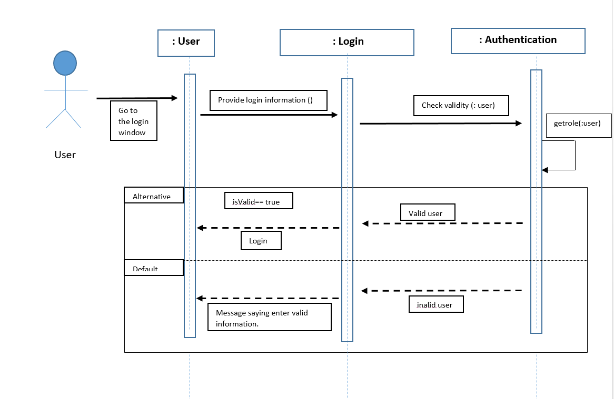
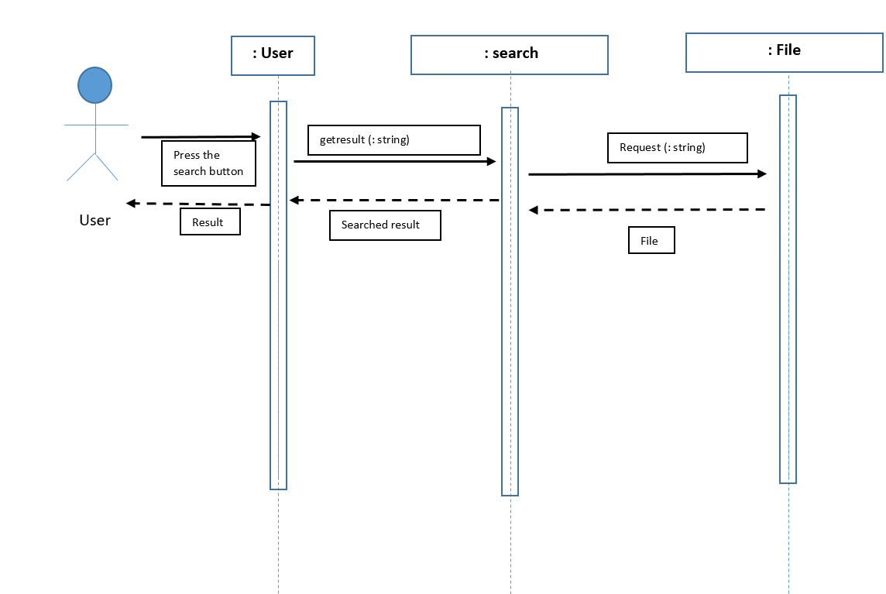

1.Introduction
1.1 Purpose Of The Document
The purpose of software design specification (SDS) is outlining the software architecture and design of “Document Digitization Service”. This design document describes all the data, architectural, interface and component level design for “Document Digitization Service”. In addition the document provides various views of the system for ease of communication and understanding with the system
1.2 Document Conventions
In our following document, the general SDS format will be used. There the main topic will be in bold format and our font size is 30 for the topics, 20 will be for subsection of the topics. There will be 7 sections of the main topics with prefixes and the sub topics will be like 1.1, 1.2, 1.3. The special names and technical terminologies will be bold.
1.3 Intended Audience and Reading Suggestions
This document is mainly for the project managers and developers. Actually this software design specification (SDS) is intended to be used as a guideline for all development requirements of its creators. The document contains a number of diagrams and technical terminologies, so that readers are instructed to have pre-established knowledge of the topics covered.
2. Description of Design Components
Server-Side:
Backup system:If any data is deleted or removed unexpectedly, this system will backup the data. Basically, this system will archive the data.
Security-System:Using this system, folders or files can be locked if needed.
Maintenance and Technical Support:The system should have better maintenance and technical support policy.
Capabilities:The system must be capable of scanning and uploading 35,00,000 pages by using this software.
Notification management:To manage the system properly, there should be a notification system that the system notify the user about the updates, edits or other changes.
Report management:The server should have to handle the reports as it's required.
Search and retrieval management:The server should have to handle the search engine properly.
Client Side:
By this the client should be able to visit through different platforms like web and android. but whenever the client visits they see the same things and same functionalities.
1.Login:
At first the Actor sees the login page.where they have to put their username and password .if the information matches with the database then see her own dashboard.if actor has not been registered yet. the registration page will appear.And the actor can also log in through Google.

2.Registration:
The registration of a user can only be done by the administrator.

2.1 Architectural Design
We will use model view template (MVT) software design architecture for both mobile and web applications for
“document Digitization Service”. It is a collection of three important components Model ,View and Template. The Model helps to handle database.
The entire design is broken into three components:
Model: Model acts as an interface for our data and is basically the logical structure behind the entire web application which is represented by a database here we will be using MySql.
View: View executes the business logic and interacts with the Model and renders the template. It accepts HTTP requests and then returns HTTP responses.
Templates: Templates are used to specify a structure for an output. Data can be populated in a template using placeholders. It defines how the data is presented. An example is a Generic list view that we can use to display a set of records from the database.
advantages of using MVT:
1.Less coupled.
2. Suitable for small to large-scale applications.
3.Easy to Modify.
MVT Architecture:
3. High-Level Component Design:
4.Class Diagram:
Detailed Class Diagram:

4.1. Class Description:


5.Sequence Diagram:
Use case: Login
Use case: Scan and Upload

Use case: Search
6.Database Design
ER Diagram
7.Implementation plan:
For the implementation, we will design the classes and database according to our diagrams. For both the web application (Monjur Hasan will work on it) and mobile application (Mostak Ahamed will work on it). Firstly we will design the user authentication and UI designs .Then we will work on our database and connect the database to both web application and mobile application. If we get enough time at the end of the work, we will work on the UI a bit more (Sadia Afrin Tamanna will work on it).